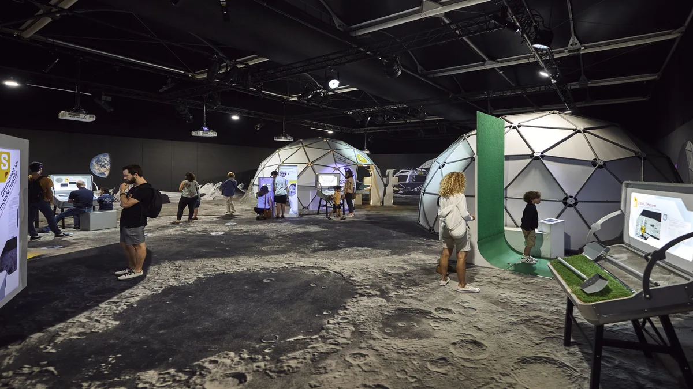

Photo : Pierre Carton / Cité de l’Espace — Le Bonbon01 / EXPLORER
Les expositions
Une sélection des espaces principaux, avec des explications accessibles et des dispositifs interactifs. Comprendre les missions spatiales et les objets célestes à notre rythme.
Parcours court proposéComment on s’organise
Un parcours préparé avec les enseignants, en petits groupes encadrés. Les espaces exacts seront choisis selon les expositions ouvertes le jour de la sortie.